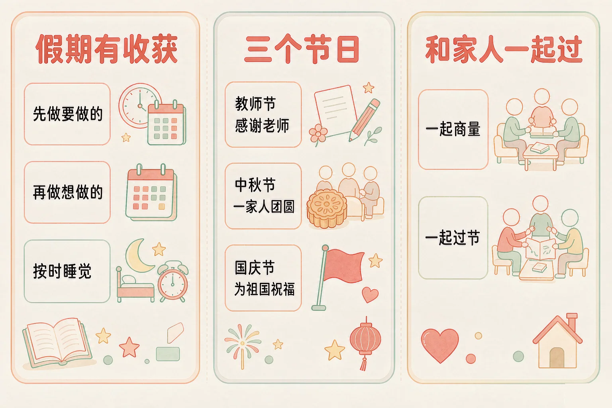
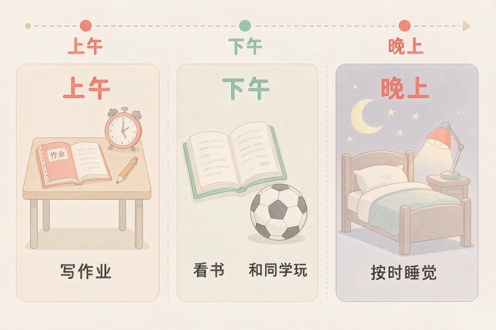
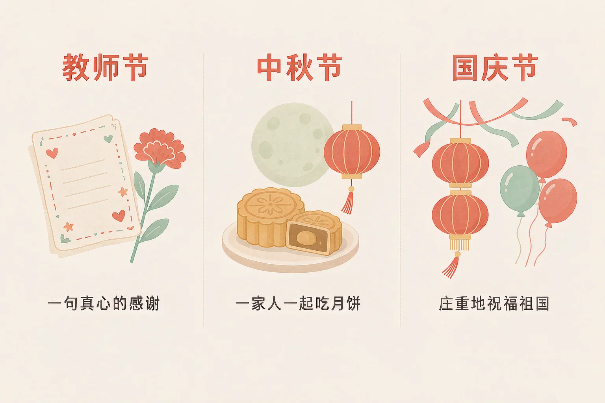

Gallery
v1.0.0 · skill v7.22.0
小学二年级 · 道德修养
同样是放假，为什么有的同学回来会说「假期什么也没做」？

选一个你真正想知道的问题，后面的活动都会围着它转。
选择或输入后，这节课会围绕你的问题展开。
先凭直觉选一个，选完立刻看到解释——错了也没关系，正好知道要重点听哪里。
1. 放长假了，下面哪种安排更合适？
把要做的先做完，玩的时候才能安心玩，假期也过得满。错因提醒：常见错误是误认为「放假就是什么都不用安排」——假期不安排，很容易一转眼就过完了。
2. 教师节到了，下面哪种表达感谢的方式最合适？
感谢老师，靠的是真心和行动：一句真心的话、一件自己动手做的小东西、认真上好每一节课。错因提醒：有人误认为「礼物越贵越有诚意」——其实心意不是用价钱来比的。
3. 中秋节说的「团圆」，是什么意思？
中秋节是一家人聚在一起的日子：一起吃月饼、一起看看月亮、听长辈说说过去的事。错因提醒：容易把「团圆」和「放假玩个痛快」搞混——团圆说的是人聚在一起、心里想着彼此。
为什么要学这一课？
平时的日子，什么时候上课、什么时候写作业，都是学校排好的（And）；可是到了假期，时间全都交给你自己，想怎么过就怎么过（But）；所以要先学会给假期做个小安排，不然一天天过去，回头想不起来做过什么（Therefore）。
放假不等于什么都不做，也不等于整天赶作业。真正过得好的假期，是要做的和想做的都安排上了。
假期里可以做的事
写作业、读一本喜欢的书、和家人一起出门走走、学一样小本领（跳绳、做一道菜）、和同学一起玩、好好休息。
安排的小办法
早上想一想今天最想做的一件事，把它写下来；先做完要做的，再去做想做的；玩一会儿，歇一会儿，也让眼睛休息一会儿。

有的同学误认为「放假了，睡到几点、玩到几点都没关系」。其实作息一乱，白天没精神，作业也写不进去，最后一天还得赶。假期也要有一点自己的节奏，早上起来、晚上按时睡，一天才过得舒服。
🔍 深层理解 换个角度再看一遍这件事，看看能不能说出背后的原理。
看见它：会过假期的人，做的事都很小：写下来、先做一件、玩一会儿、按时睡觉。它们不在纸上，就在每一天里。
解释它：为什么先做要做的更舒服？因为放着没做的事会一直惦记着，玩也玩不安心；先做完，玩的时候就真的是在玩。
迁移它：这个办法不只用在假期：周末、寒暑假、放学以后，甚至一个下午，都可以这样排——先做要做的，再做想做的。
先点一件你在节假日里可能会遇到的事，再从三个做法里选一个。选得好会告诉你为什么，选得不太合适也会告诉你还可以试试什么。
先点一件节假日里可能遇到的事。
节假日里，有三个日子特别值得记住。它们不只是「放假」，还各有一份心里的意思。

有的同学误认为「过节就是放假、收礼物、玩个痛快」。其实这些日子还有它自己的意思：教师节要感谢老师，中秋节要一家团圆，国庆节要为祖国庆祝。把这份意思过出来，节日才不一样。
🔍 深层理解 换个角度再看一遍这件事，看看能不能说出背后的原理。
看见它：三个节日里，真正让人记住的都不是礼物，而是那几件小事：给老师递上一张卡片、给爷爷倒一杯水、和家人一起看一次庆祝活动。
比较它：教师节是对身边人的感谢，中秋节是一家人的团圆，国庆节是对祖国的祝福。日子不一样，要表达的心意也不一样。
迁移它：这样的心意不只在节日里。平时对老师认真一点、对长辈耐心一点、看到升国旗停下来站好，都是在做同一件事。
上面是六件在节假日里做的事，下面是三个节日。先点一件事，再点它属于哪个节日。
我们找到的家
先在上面点一件事。
情境：中秋节那天晚上，爷爷奶奶来了，妈妈在准备月饼和水果，小美正在看动画片，正好看到最精彩的地方。她应该怎么做比较好？请你帮她一步一步想清楚。
有的同学误认为「过节最重要的是自己玩得开心，家里人的事等一等没关系」。可是团圆的日子，一家人坐在一起才是最重要的。动画片随时能看，一家人的这个晚上，过去了就过去了。
说给同桌听：小美这四步里，哪一步你自己已经做到了？如果换成你，你还会加上哪一件小事？
先凭直觉选一个，选完立刻看到解释——错了也没关系，正好知道要重点听哪里。
1. 关于假期安排，下面哪个说法更合适？
有安排不等于不自由，而是让这一天过得更舒服、更满。错因提醒：常见错误是误认为「有安排就不好玩」——真正不好玩的是最后一天手忙脚乱地赶作业。
2. 中秋节一家人围着桌子坐下来了，下面哪个做法更合适？
中秋节最珍贵的就是一家人在一起说说话。错因提醒：容易把「团圆」搞混成「只要大家在同一间屋子里就行」——要坐在一起、有说有笑，才是团圆。
3. 国庆节，下面哪个做法既合适又庄重？
国庆节是庆祝祖国生日的日子，我们用庄重的方式表达祝福。错因提醒：有人误认为「国庆就是多放几天假」——它还是一个为祖国庆祝的日子。
先凭直觉选一个，选完立刻看到解释——错了也没关系，正好知道要重点听哪里。
1. 寒假第一天，你打算怎么安排？
先把想做的事写下来，假期就有了一个大致的样子。错因提醒：常见错误是误认为「寒假很长，慢慢来也来得及」——一天一天过去，很快就到开学了。
2. 重阳节，家里要去看望外婆，你会：
看望长辈是心里有他们。问一声好、陪她说说话，这几件小事长辈会记很久。错因提醒：容易误认为「去了就行，站着不说话也算陪」——陪是要说说话的。
3. 假期最后一天，作业还剩一点没写完，你会：
写完再去玩，玩的时候心里是轻松的。错因提醒：有人误认为「抄一遍也算完成」——抄来的东西自己没学会，下次遇到还是不会。
先点一条做法，再点它应该进的筐：合适的做法放一边，要调整的做法放另一边。
先在上面点一条做法。
分完之后，想一想：
要调整的做法里，有没有哪一条是「我下次很像会做的事」？把它记下来，再说一说换成合适的做法应该怎么做。
回到开头那个问题：为什么有的同学放假回来会说「假期什么也没做」？因为假期需要一点点安排。只要把要做的先做完，再做想做的，节日里的心意也说出口、做出来，你的假期就不会白过。
给别人讲一遍：请用「安排、感谢、团圆」这三个词，说清楚你打算怎样过好下一个节假日。
三层练习，做完第一、二层就算通关；第三层留给愿意继续探索的同学。
⭐ 基础巩固（必做）
⭐⭐ 能力应用（必做）
⭐⭐⭐ 迁移挑战（选做）
左边是学它之前要先会的，右边是学会之后可以继续探索的，下面是同一领域的伙伴知识。
图谱正在加载：首次进入需下载知识索引（约 1–3 秒），加载完成后本行会自动消失。